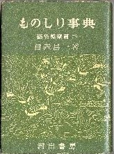

四連太宝のコラムで雑学辞典について触れた。σ(-_-)も雑学が好きなので、その手の本をたくさん買っている。そんな雑学辞典のはしりといえば、たぶん昭和20年代後半に河出書房から刊行された日置昌一の「ものしり辞典」

ものしり辞典は「芸能娯楽編（上）、芸能娯楽編（下）、医薬編、政治編、風俗編（上）、風俗編（下）、文化編、飲食編」の８冊からなる。よくある雑学辞典は、企画会社なり出版社の複数のライターの手で編纂される。しかしこの本は１人の人間の手による。それだけでもおどろきだが、普通の雑学辞典と異なっていて基本的に何かの事始めを記している（たとえば風俗編でいえば、アドバルーンの始めとか雨戸の始めなど）。で そのうちの芸能娯楽編（下）」（s28．4）の75ページに麻雀の話が出てくる。
内容は前半が日本への麻雀の伝来と、どのように普及したかの話。それがほぼ正確なので、感心した。面白かったのは麻雀官僚の話。なんでも官僚が商人と麻雀すると、かならず官僚が勝ってたんまりゼニを受け取るしくみになっているとか。へえ〜 そうだったのか、ちーっとも知らなかった。
後半がさまざまなイカサマの話。これもかなり詳しく載っている。著者は明治37年12月岐阜県郡上郡生まれ。専門は日本文化史で、安政の大獄や日本僧兵の研究で有名だった人らしい。それがどうして麻雀の起源や日本での普及、あるいはイカサマについても詳しかったのか不思議不思議。
コラムの最後に、麻雀にちなんだ川柳が載っている。全部で12句あるが、心にしみたのが次の１句。いや、風流な句だ(^-^)V
・かき混ぜる牌の音のみ小夜更けて 吾朗
|